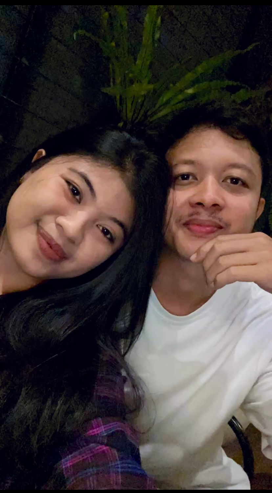

Empat bulan terakhir semenjak hadirnya kamu di hari-hari aku, sejak aku memilih kamu dipikiran aku, tiba-tiba rasanya semua lagu romantis jadi masuk akal dan terasa jadi perubahan besar .
Aku ketergantungan kabar kamu, mulai sering kambuhh kangennyaaa, dan mulai masuk semua tentang kamu, jangan ada yang berubah dari kamu yaa hanyyy.
Aku cuma mau nyampein, biar kamu ingat terus. Aku harap kita bisa saling menghargai di manapun
kita lagi berada yaa Hanyy. Banyak perasaan yang susah aku jelaskan dengan kata-kata disini, tapi dari semua itu
ada satu inti yang paling penting: Aku sayang kamu Hanny, sayang banget ❤️
Tapi yang harus kamu tau, kata kata yang aku ketik disini gak sebanding dengan apa yang aku rasain ke kamu

Hanny, aku mau kamu jadi kepunyaan aku seutuhnya, aku mau kamu jadi pacar aku, maukah?